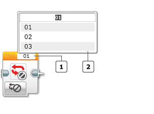
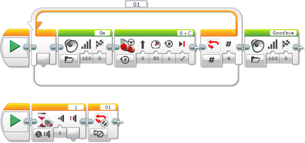

					<table cellpadding="0" cellspacing="0" border="0"><tbody><tr><td>
	
						<h1>循环中断模块<a name="top"></a></h1>
		<div id="block_274" class="block blockHeader">
				<table cellspacing="0" cellpadding="0" border="0">
			<tbody><tr>
				<td valign="top" class="image"></td>
				<td valign="top" class="description"><div class="text-wrapper">循环中断模块使<a href="./index.html?id=LoopCondition">循环</a>模块结束。不会执行循环序列中的更多模块，程序会继续执行循环之后的任何模块。可以使用循环名称指定要中断的循环模块。<br>
<br>
可以使用循环中断模块使循环比通常方式更快退出，或是响应不同条件。可以在循环本身内部中断循环，或是从同时运行的其他模块序列中断循环。</div></td>
			</tr>
		</tbody></table>
			</div>
	<div id="block_275" class="block blockChaptor">
		<div class="title"><a name="ChooseTheLoopName" style="position:relative; top:-10px;"></a>选择循环名称</div>
		<div class="description"><br>
<br>
 模块文本字段（循环名称）<br>
 名称选择器</div>
	</div>
	<div id="block_1406" class="block blockChaptor">
		<div class="title"><a name="Mode" style="position:relative; top:-10px;"></a>模式</div>
		<div class="description"></div>
	</div>
	<div id="block_1407" class="block blockMode">
		<div class="title"><a name="Mode_Interrupt" style="position:relative; top:-10px;"></a>中断 <a name="InterruptName" style="position:relative; top:-10px;"></a></div>
		<div class="description">循环中断模块具有一种模式。模块顶部的模块文本字段显示要中断的循环的循环名称（请参见<a href="./index.html?id=LoopCondition">循环</a>模块）。单击模块文本字段可显示弹出菜单。弹出菜单会列出程序中循环模块的名称。从列表中选择要中断的循环的名称。<br>
<br>
当循环中断模块执行时，指定循环会立即结束，程序会跳到循环之后的任何模块。</div>
	</div>
	<div id="block_276" class="block blockExample">
		<div class="title">示例</div>
		<div class="image"></div>
		<div class="description">此程序具有配置为重复 6 次并且名为“01”的循环。但是，另一个正在运行的序列等待触动传感器受到按压，并在触动传感器受到按压时使用循环中断模块提早停止该循环。</div>
	</div>
	
			<div id="quick">
				<div class="header"><a href="./index.html?id=Interrupt#header">循环中断</a></div>
					<div class="quickText">快速链接</div>
					
					<ul>
	<li><a href="./index.html?id=Interrupt#ChooseTheLoopName">选择循环名称</a></li><li><a href="./index.html?id=Interrupt#Mode">模式</a></li>					</ul>
			</div>
	
	</td></tr></tbody></table>